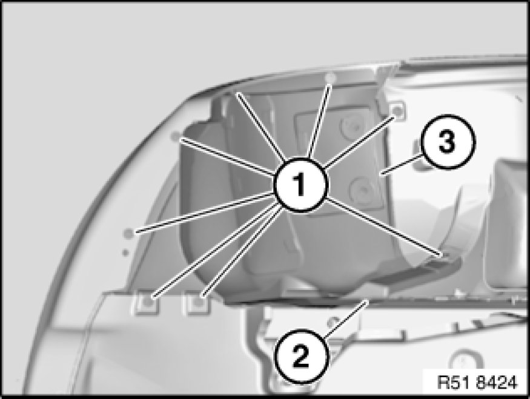
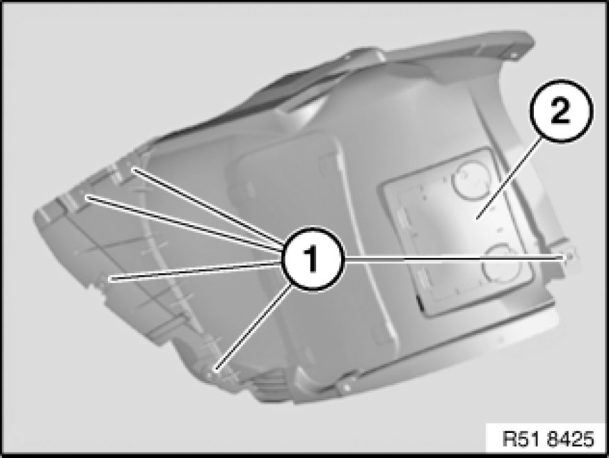

51 71 038 Removing and Installing/Replacing Front Left or Right Wheel Arch Cover (Front Section)
51 71 038 - Removing and installing/replacing front left or right wheel arch cover (front section)

Note:
Prior to removing, pay attention to the exact installation position with respect to the adjoining components.

Necessary preliminary tasks:
- If necessary, remove left or right front wheel 36 10 300 Removing or Installing Front or Rear Wheel
Note:
The operation is described on the left side; proceed in the same way for the right side.

Note:
Front axle removed for purposes of clarity.
Release screws (1).
Slacken nut (2).
Feed out front wheel arch cover (3) and if necessary disconnect electrical plug connection.
Installation:
Make sure front wheel arch cover (3) is correctly seated.

Replacement:
- Modify sheet nuts (1)
- Modify cover (2)
Version with RDC:
- Modify trigger transmitter 36 11 121 Removing and Installing/Replacing an RDC Trigger Transmitter (Front)
Installation:
If necessary, replace faulty metal nuts (1).